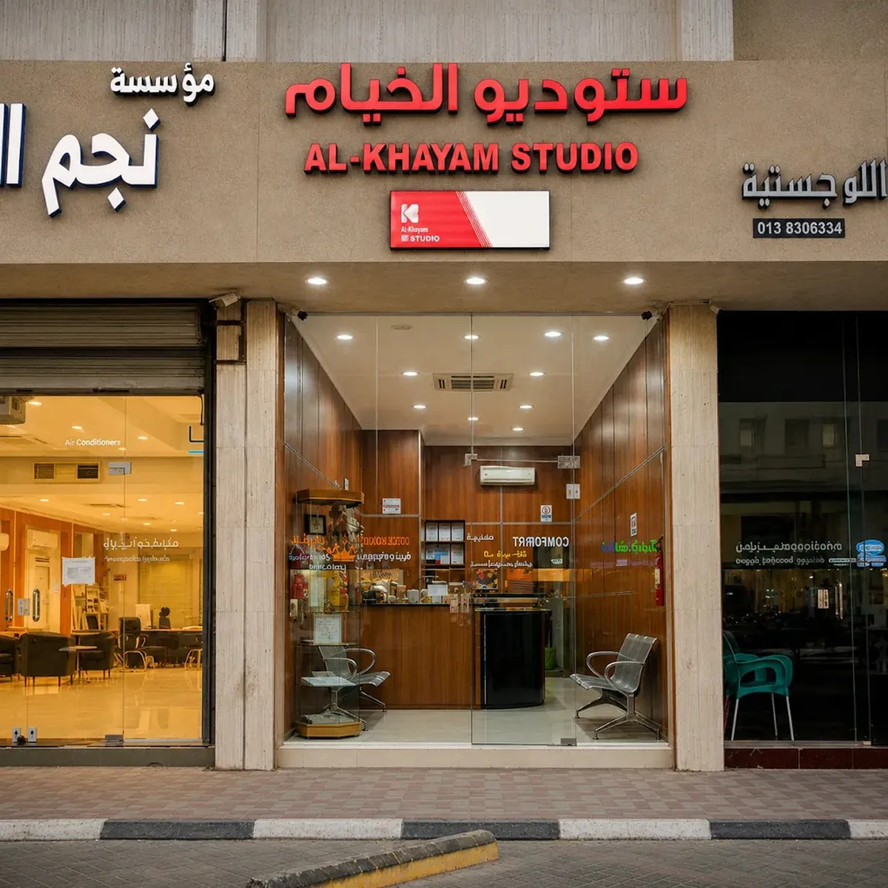
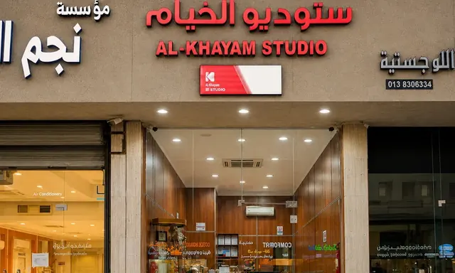

صور الوثائق الرسمية
صور الجواز، الهوية الوطنية، الإقامة والتأشيرات بمقاسات وتجهيز مناسب للوثائق الرسمية.

صور جواز وهوية وإقامة وتأشيرات، وتصوير شخصي وطباعة وترميم الصور في فرع العنود بالدمام، مع تواصل مباشر وموقع واضح وساعات عمل محدثة.
صور الجواز، الهوية الوطنية، الإقامة والتأشيرات بمقاسات وتجهيز مناسب للوثائق الرسمية.
صور شخصية ورسمية بخلفية وإضاءة مناسبة للاستخدام المهني والشخصي.
طباعة الصور بمقاسات مختلفة، بما في ذلك خدمات الطباعة السريعة المتاحة في الفرع.
ترميم وتحسين الصور القديمة مع إمكانية مسحها ضوئيًا وتحويلها إلى نسخة رقمية.
تعديل وتجهيز الصور بما يناسب الاستخدام المطلوب مع الحفاظ على مظهر طبيعي وواضح.
تجهيز صور التأشيرات والسفارات الدولية بحسب المقاس والمتطلبات المطلوبة.

تأسس ستوديو الخيام عام 1991، ويقدم هذا الفرع في العنود، الدمام خدمات صور الجوازات والهوية الوطنية والإقامة والتأشيرات، إلى جانب التصوير الشخصي والرسمي وطباعة الصور وترميمها. نركز على جودة الصورة، سرعة الإنجاز، وتجهيز الصور بما يناسب المتطلبات الرسمية، مع تجربة واضحة وسهلة من الوصول إلى الفرع حتى استلام الصور.
شارع الملك عبدالعزيز، حي العنود، الدمام